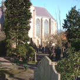
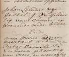
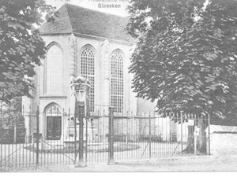
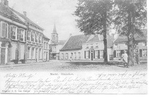
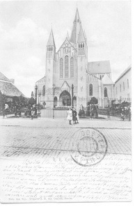
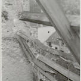
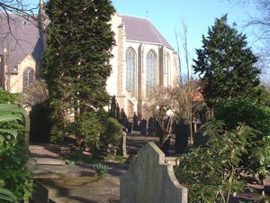
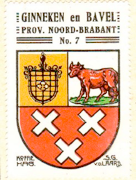

Interactieve Tijdlijn van de Laurentiuskerk
Wandel interactief door zeven eeuwen bewogen dorpsgeschiedenis, van de middeleeuwse stichting en de Tachtigjarige Oorlog, tot de kerkstrijd in de Franse tijd met Napoleon en de herrijzenis na 1944.
Ingebruikname als Parochiekerk
Het monumentale kerkgebouw aan de Ginnekenmarkt wordt als parochiekerk in gebruik genomen, gewijd aan de Heilige Laurentius. Het was aanvankelijk een driebeukige kruiskerk.

De kerk werd gewijd aan de Romeinse diaken Laurentius (ca. 258 n.Chr.). Hij weigerde de kerkschatten af te dragen aan de Romeinse keizer en wees naar de armen en behoeftigen als de ware schatten van Christus. Laurentius stierf de marteldood op een gloeiend rooster, een attribuut dat tot op de dag van vandaag prijkt in het historische gemeentewapen van Ginneken en Bavel.
Herbouw na de Tachtigjarige Oorlog
Tijdens de verwoestende Tachtigjarige Oorlog wordt het schip van de kerk opgeblazen. In 1631 herbouwt pastoor van Biestraten het godshuis.
Vanwege chronisch geldgebrek in het door krijgsgeweld geteisterde Brabant bleef de herbouw beperkt tot één lage middenbeuk van het schip. Deze ingreep gaf het gebouw aan de Ginnekenmarkt zijn markante, intieme en karakteristieke dorpse silhouet.
Vrede van Münster & Zelfstandige Hervormde Gemeente
Op 13 maart 1641 stemt de Raad van State in met een eigen predikant. Op zaterdag 27 juni 1648, bij het sluiten van de Vrede van Münster, wordt de kerk officieel toevertrouwd aan de protestanten.

Met het einde van de Tachtigjarige Oorlog werd Staats-Brabant een generaliteitsland. Het kerkgebouw aan de markt werd het vaste onderkomen van de hervormde gemeente van Ginneken. Eeuwenoude doop- en trouwregisters getuigen van het rijke gemeenteleven uit deze periode.
Franse Tijd & De Strijd om het Kerkgebouw
Franse troepen onder bevelhebber Pichegru trekken in januari 1795 binnen. Voor katholieken ontstaat de wettelijke mogelijkheid kerken terug te vorderen. De waarde van kerk en pastorie wordt getaxeerd op ruim ƒ 11.000,--.

Predikant ds. J.C. Hirschig weigerde iedere medewerking aan teruggave. De Ginnekense autoriteiten namen daarop de sleutels in beslag, waardoor er tot 8 augustus 1798 geen enkele kerkdienst gehouden kon worden. De zaak escaleerde naar het Uitvoerend Comité in Den Haag.
De Reddingsboei: De Graauwmans-documenten
Zeven inwoners (vermoedelijk uit Ulvenhout) verklaren schriftelijk af te zien van aanspraak op de Laurentiuskerk. Dit document redt de kerk voor de protestantse gemeente.
Op 15 juni 1798 lieten C. Graauwmans, C. Laureijsen, J. van Hooijdonck, A. Meeren, C.A. Rombouts, J. van Miert en H. van Dijk de kerkenraad weten af te zien van claims. Mogelijk vreesden zij gevolgen voor hun eigen bedehuis in Ulvenhout. Dit schrijven bereikte Den Haag en bleek doorslaggevend tegen de Ginnekense teruggave-eis.
Ginnekense Storm in een Glas Water (Kerkbezetting)
Op 8 juli 1803 klimmen timmerman Henk Vermeulen en herbergier Anton Kuijpers de kerk binnen en vergrendelen de zijdeur met houten spieën. De zaak krijgt landelijke ruchtbaarheid.
De kwestie diende voor de Drossaard van de Hoge Vierschaar in Breda. Het college oordeelde scherp: dominee Hirschig werd berispt wegens schromelijk overdrijven, schout Knaap wegens onhandig optreden, en de twee bezetters belandden in het gevang. Slechts kosteres Catharina Schellekens ging volledig vrijuit.
Koning Lodewijk Napoleon Bemoet Zich met Ginneken
Koning Lodewijk Napoleon brengt een bliksembezoek aan Ginneken. Hij besluit dat de kerk aan de markt protestants blijft; de kerk van Bavel gaat naar de katholieken.
Koning Lodewijk Napoleon koos voor een pragmatische vrede: de protestanten behielden hun historische Laurentiuskerk aan de Ginnekenmarkt, terwijl de vervallen kerk in Bavel werd overgedragen aan de katholieken met een financiële tegemoetkoming.
Belgische Opstand, Cellen in de Toren & De Varkensmarkt
Tijdens de Belgische Opstand worden gevangenen opgesloten in de kerktoren. De historische begraafplaats wordt door het leger bezet en door de gemeente bestemd voor de wekelijkse varkensmarkt.
Omdat kerktorens strategisch eigendom van de overheid waren, werden Belgische krijgsgevangenen bij gebrek aan cellen in Breda in de toren opgesloten. Op 25 juli 1834 deden katholieken een laatste formele poging de kerk terug te vorderen, maar ds. Roscam Abbing wist dit met succes te verhinderen.
Bouw Eerste Katholieke Parochiekerk aan de Ginnekenweg
De katholieke parochie bouwt een eigen godshuis aan de Kerkstraat (Ginnekenweg) met ƒ 8.000 rijkssubsidie. De varkensmarkt verhuist eindelijk buiten de kerkhofmuur.

Met de bouw van deze kerk keerde de rust terug in het dorp. Toen de luidklokken naar de nieuwe toren verhuisden, wist de protestantse kerkenraad met succes af te dwingen dat de verfoeide varkensmarkt definitief van de gewijde begraafplaats werd verwijderd.
Nieuwe Laurentiuskerk van Architect Jos Cuypers
De kerk uit 1843 is al snel te klein. Aan de Ginnekenweg verrijst de huidige imposante Laurentiuskerk, ontworpen door de beroemde bouwmeester Jos Cuypers.

Het indrukwekkende neogotische bouwwerk met zijn monumentale toren is een icoon in de Ginnekense dorpskern. Sindsdien dragen zowel de protestantse kerk aan de markt als de katholieke basiliek aan de Ginnekenweg in vreedzame harmonie de naam Laurentius.
Grote Restauratie o.l.v. Ds. Ter Haar Romeny
Ds. B. ter Haar Romeny leidt een alomvattende restauratie met Rijksmonumentenzorg. Muren, koor, transepten en preekstoel worden in historische luister hersteld.
Onder leiding van ds. Ter Haar Romeny werd tevens een orgelfonds opgericht. Ook de sociale diaconie bloeide: verzorgingstehuis "De Werve" werd geopend, Huize "Mariëndal" werd in 1933 aangekocht voor jeugdzorg, en begraafplaats De Bieberglaan werd gerealiseerd.
Voltreffer bij de Bevrijding & Herrijzenis
In oktober 1944 wordt de Laurentiuskerk tijdens de bevrijding van Ginneken zwaar getroffen door een voltreffer. In 1947 is de oorlogsschade geheel hersteld.

De gevechten en granaatinslagen brachten ernstige schade toe aan het dak, de gewelven en het interieur. Dankzij grote eensgezindheid en fondsenwerving werd de kerk in 1947 feestelijk heropend voor de eredienst.
Vier Gebrandschilderde Ramen van Charles Eyck
Onder leiding van ds. A.C.D. van den Bosch vervaardigt prof. Charles Eyck (1897–1983) vier meesterlijke gebrandschilderde ramen voor het kerkinterieur.
De ramen werden in fasen onthuld: "De overwinning op de dood" (1964 in de grafkapel), het Doopraam (1965), het grote Scheppingsraam (1966) en "Het Nieuwe Jeruzalem" (1969). Ze trekken kunstliefhebbers uit het hele land.
Protestantse Gemeente Ginneken & Heden
In mei 2007 gaan de plaatselijke hervormde en gereformeerde gemeenten definitief samen als Protestantse Gemeente Ginneken: een open en levendige dorpskerk.

Vandaag de dag is de Laurentiuskerk een bruisend middelpunt voor vieringen, concerten, ontmoeting en bezinning. Op het eeuwenoude kerkhof staat de befaamde honingboom als levend symbool van zeven eeuwen verbondenheid met het Ginneken.
Het Volledige Historische Verhaal
Lees hieronder het integrale chronologische relaas over zeven eeuwen Laurentiuskerk, de kerkstrijd in de Franse tijd met Napoleon, en de kunstschatten van onze dorpsgemeente.
Rijke historie van zeven eeuwen
Het monumentale kerkgebouw aan de Ginnekenmarkt is in het jaar 1316 als parochiekerk in gebruik genomen, gewijd aan de Heilige Laurentius. Aanvankelijk was de kerk driebeukig; nadat het schip in de Tachtigjarige Oorlog was verwoest en opgeblazen, werd de kerk in 1631 door pastoor van Biestraten herbouwd. Door geldgebrek bleef het toen bij één lage middenbeuk van het schip, die het kerkje zijn karakteristieke en intieme dorpsuitstraling gaf.
De Heilige Laurentius
De diaken Laurentius weigerde in de Romeinse tijd (ca. 258 n.Chr.) de schatten van de kerk (heilige vaten en schriftrollen) uit te leveren aan de Romeinse keizer. Hij trad met de armen en behoeftigen in zijn gemeente naar buiten: volgens hem de échte schatten van de kerk.
Laurentius werd daarop als martelaar ter dood gebracht op een gloeiend rooster. Daarom wordt hij traditioneel afgebeeld met een rooster, maar ook met een palmtak als teken van de overwinning op de dood. Hij wordt beschouwd als beschermheilige van de smeden en brandweerlieden. Het martelaarsrooster is nog altijd prominent terug te vinden in het historische gemeentewapen van Ginneken en Bavel.

Protestantse Gemeente zelfstandig (1641 & 1648)
Op 13 maart 1641 werd een verzoek van de Hervormde Gemeente van Ginneken om een eigen predikant te mogen beroepen goedgekeurd door de Raad van State. Met het sluiten van de Vrede van Münster op zaterdag 27 juni 1648 werd het kerkgebouw officieel toevertrouwd aan de hervormden.
In mei 2007 ging de gemeente na het samengaan van de hervormde en gereformeerde kerken officieel over in de Protestantse Gemeente Ginneken.
De strijd om de Laurentiuskerk in de Franse tijd
Toen bevelhebber Pichegru in januari 1795 ons land binnentrok, kwamen de Fransen voor een aantal jaren aan de macht. Voor katholieken ontstonden er nu wettelijke mogelijkheden om de na de Reformatie door protestanten in gebruik genomen kerken terug te vorderen. Op 19 juni 1798 dienden Ginnekense katholieken een officieel verzoek in. Een commissie stelde de waarde van de kerk en pastorie vast op ruim ƒ 11.000,--.
Predikant ds. J.C. Hirschig weigerde echter iedere medewerking. Tot 8 augustus 1798 konden er geen kerkdiensten worden gehouden, omdat de burgerlijke overheid over de sleutels van de kerk beschikte.
Inwoners uit Ulvenhout en de "Graauwmans-documenten"
De Ginnekense autoriteiten stuurden het dossier met een gunstig advies tot teruggave naar het "Uitvoerend Comité" in Den Haag. Maar daar stak een zevental inwoners (waarschijnlijk uit Ulvenhout: C. Graauwmans, C. Laureijsen, J. van Hooijdonck, A. Meeren, C.A. Rombouts, J. van Miert en H. van Dijk) een stokje voor. Op 15 juni 1798 lieten zij de kerkenraad schriftelijk weten af te zien van enige aanspraak op de kerk en bijhorende gebouwen. Dit document bereikte Den Haag en bleek van doorslaggevend belang voor het behoud van de kerk voor de protestanten.
Ginnekense storm in een glas water (1803)
Niet iedereen legde zich daarbij neer. Op de gedenkwaardige 8 juli 1803 klommen timmerman Henk Vermeulen en herbergier Anton Kuijpers de kerk binnen en vergrendelden de zijdeur met houten spieën. De kwestie kwam voor bij de Drossaard van de Hoge Vierschaar in Breda. Het college oordeelde dat vrijwel iedereen fout was geweest: dominee Hirschig kreeg een berisping wegens schromelijke overdrijving, schout C. Knaap wegens ontactvol optreden, en de twee bezetters verdwenen tijdelijk in het gevang. Alleen kosteres Catharina Schellekens ging geheel vrijuit.
Koning Lodewijk Napoleon in Ginneken (1809)
In 1809 bracht de katholieke koning Lodewijk Napoleon een bliksembezoek aan Ginneken om de slepende kwestie te bespreken. Als pragmatische oplossing werd de verwaarloosde kerk van Bavel aan de katholieken teruggegeven, maar bleef de Laurentiuskerk aan de Ginnekenmarkt definitief in handen van de protestantse gemeente.
Belgische Opstand en de varkensmarkt (1830–1834)
Tijdens de Belgische Opstand in 1830 werd in verband met een nijpend cellentekort tijdelijk een aantal Belgische krijgsgevangenen opgesloten in de kerktoren. Kerktorens waren om strategische redenen eigendom van de burgerlijke overheid. De historische begraafplaats bij de kerk (waar nu het Chassémonument staat) werd door het leger ontruimd en door de burgerlijke gemeente bestemd als plaats waar de wekelijkse varkensmarkt werd gehouden.
Op 25 juli 1834 ondernamen de katholieken een laatste poging de kerk terug te krijgen, maar mede dankzij het verweer van ds. Roscam Abbing en de Graauwmans-documenten werd dit verzoek definitief afgewezen.
Bouw van de katholieke Laurentiuskerk (1843 & 1902)
In 1843 gingen de Ginnekense katholieken over tot de bouw van een eigen parochiekerk in het dorpscentrum aan de Kerkstraat (nu Ginnekenweg), met een rijkssubsidie van ƒ 8.000,--. Toen de luidklokken verhuisden, wist de protestantse kerkenraad gedaan te krijgen dat de omstreden varkensmarkt eindelijk buiten de kerkhofmuur werd verplaatst.
Omdat dit gebouw al snel veel te klein bleek, verrees in 1902 aan de Ginnekenweg de huidige grote Laurentiuskerk, een schepping van de befaamde architect Jos Cuypers. Sindsdien dragen beide kerken in Ginneken in goede harmonie de naam van Sint Laurentius.
Restauraties, jeugdzorg en de Tweede Wereldoorlog
Na ds. Roscam Abbing (overleden in 1870) kwam in 1916 ds. B. ter Haar Romeny. Hij werd de grote pionier van de algehele restauratie van de kerk aan de markt, in nauwe samenwerking met Rijksmonumentenzorg. Muren, koor en transepten werden teruggebracht in hun oorspronkelijke stijl, de preekstoel kreeg zijn ereplaats terug en er kwam een orgelfonds voor een nieuw kerkorgel.
In deze tijd bloeide ook de maatschappelijke betrokkenheid: verzorgingstehuis "De Werve" werd geopend, Huize "Mariëndal" werd in 1933 aangekocht ten behoeve van de jeugdzorg, en er werd een protestantse begraafplaats aan de Bieberglaan gerealiseerd.
In oktober 1944 werd de kerk tijdens de bevrijding door een voltreffer zwaar beschadigd. In 1947 was de oorlogsschade hersteld en werd de kerk feestelijk heropend. In 1998 volgde opnieuw een uitvoerige restauratie.
De gebrandschilderde ramen van Charles Eyck (1964–1969)
In de jaren zestig zorgde ds. A.C.D. van den Bosch ervoor dat er vier monumentale gebrandschilderde ramen werden geplaatst, vervaardigd door de befaamde kunstenaar prof. Charles Eyck (1897–1983) uit Schimmert:
- 1964: "De overwinning op de dood" in de grafkapel aan de kerkhofzijde
- 1965: Het Doopraam aan de tegenoverliggende zijde
- 1966: Het grote Scheppingsraam
- 1969: Het raam van "Het Nieuwe Jeruzalem"
De verhouding protestanten en katholieken in het Ginneken bedroeg historisch ongeveer een op vier. We mogen dan ook met recht trots zijn op de eeuwenlange tolerantie en het wederzijds respect tussen de dorpsgenoten.
Honingboom op Begraafplaats Oud Ginneken
Op de monumentale begraafplaats direct naast de kerk staat een bijzondere en eeuwenoude honingboom. In een aflevering van de rubriek "Bomen in Breda" op BredaNu wordt deze bijzondere boom uitgelicht: